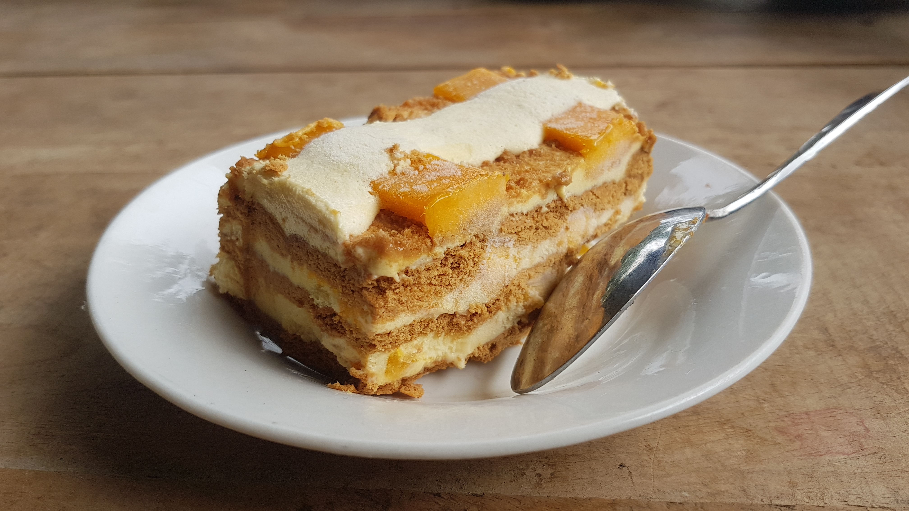

Favorite Foods
- Calamares

- King Crab

- Adobong Tahong

- Mango Float

I was born and raised in Davao City. When I was young, I used to believe that power rangers are real. I admire their appearance and abilities in fighting the villains.
Way back in my elementary days, I already have this urge to sing and dance in front of an audience. Now, even though I was not able to really forge and develop my talents, I still want to perform in a crowd and just enjoy art in general.
In my vacant time, I like to eat, dance, sing, travel, or watch movies. I am not that much of a sporty person but I know how to play volleyball and badminton. Recently, I am more fond in creating TikTok videos since it serves as my aid in stress and pressure brought by my academic and personal life.